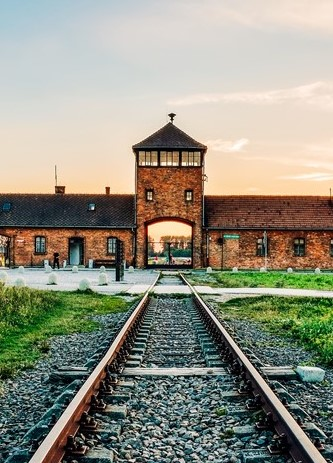

From 20th to 27th may 2023 in boarding school lived our German friends as a port of our student exchange. They came to us from Wuppertal to get to know our cities and history. The whole enterprise is organized as a part of project "Zachować pamięć". As students of class II in ZSTI gliwice we committed ourselves to accompany and help them in sightseeing. This international project will allow us to improve our German language, make a new friends and take a look at other pepole's opinion on our country. Such international cooperation will teach us participants tolerance and respect for the history of our countries.


